Quotes per a usuaris i grups
Què són les QUOTES de disc?
Les quotes de disc són una eina essencial per limitar i gestionar l'espai d'emmagatzematge utilitzat per usuaris i grups en un sistema Linux. Aquestes permeten prevenir l'ús excessiu d'espai de disc, assegurant que cap usuari o grup monopolitzi els recursos del sistema.
En aquest apartat aprendrem:
-
Què són les quotes de disc i per què són útils.
-
Com assignar quotes a usuaris individuals.
-
Com configurar quotes per a grups.
-
Com monitoritzar les quotes i configurar notificacions automàtiques.
Aplicar quotes
Primerament, instal·lem quota utilitzant la següent comanda:
apt install quota
Hem creat una partició /dev/sdb1 i posteriorment hem muntat la carpeta /mnt/dades editant el fitxer fstab.
Atenció! Molt de compte amb el fitxer
fstab. Si introdueixes alguna configuració incorrecta, el sistema pot no arrencar i hauràs de reparar-lo manualment.
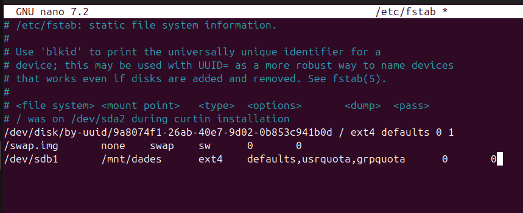
Afegim les opcions defaults,usrquota,grpquota. Això habilitarà les quotes tant per a grups com per a usuaris.
Després de configurar-ho, reiniciem el sistema perquè el muntatge s'apliqui correctament.
Activar Quotes en un Directori
Un cop el sistema estigui en marxa, comprovem si els fitxers de quota existeixen executant:
quotacheck -cug /mnt/dadesquotaon /mnt/dades
Aquests passos verificaran i activaran les quotes.
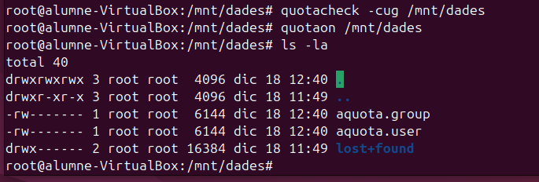
Nota! Si no veus els fitxers
aquota.groupiaquota.user, pots forçar-ne la creació amb:quotacheck -cugm /mnt/dades
i posteriorment activar-los ambquotaon /mnt/dades.
Aplicar quotes a un usuari
Per assignar quotes als usuaris, existeixen dues maneres. Una d'elles és utilitzant edquota -u + nom, que permet editar manualment les quotes assignades a un usuari.
edquota -u "exemple"
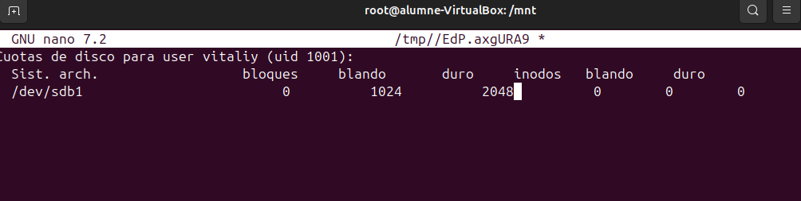
- Blando o Soft: Indica el límit tou, que l'usuari pot excedir durant el període de gràcia.
- Duro o Hard: Representa el límit màxim que no es pot excedir.
Configura aquests valors segons les necessitats de cada usuari.
Una altra manera d'assignar quotes és amb la següent comanda:
setquota -u vitaliy 1024 2048 0 0 /mnt/dades
Aquesta comanda fa el mateix que l'edició manual amb edquota, però no cal entrar dins del fitxer ni modificar-lo manualment.
Exemple
En aquesta secció, expliquem com assignar quotes als usuaris amb exemples pràctics.
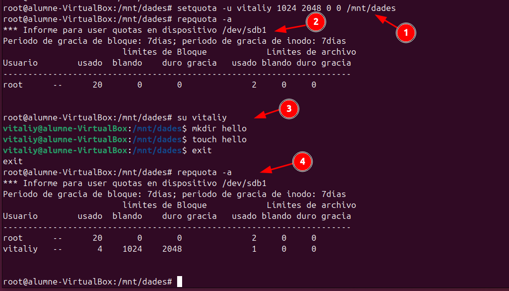
Nota: Si l'usuari no pot escriure executa
chmod 777 /mnt/dades.
Explicació Pas a Pas de la Captura
A la captura de pantalla es mostren els passos següents per aplicar quotes a un usuari:
-
setquota -u vitaliy 1024 2048 0 0 /mnt/dadesAquesta comanda assigna una quota a l'usuari
vitaliy:- 1024: Límit tou (soft limit) de 1 MB.
- 2048: Límit dur (hard limit) de 2 MB.
- 0 0: No s'assigna cap límit per als inodes.
-
repquota -aComprova les quotes del sistema. Al principi només apareix l'usuari
rootamb un ús mínim d'espai. -
Inici de sessió com a usuari
vitaliyL'usuari
vitaliycrea un directori i un fitxer per consumir espai:mkdir hello: Crea un directori anomenat "hello".touch hello: Crea un fitxer buit.
-
Comprovació de quotes després de l'activitat
Es torna a executar
repquota -aper verificar l'ús actualitzat de l'usuari:- L'usuari
vitaliyapareix ara amb: - Usat: L'espai utilitzat (4 blocs).
- Blando: Límit tou (1024 blocs).
- Duro: Límit dur (2048 blocs).
- L'usuari
Aquests passos confirmen que les quotes estan funcionant correctament per a l'usuari vitaliy.
Intentem sobrepassar el límit per veure què pot passar
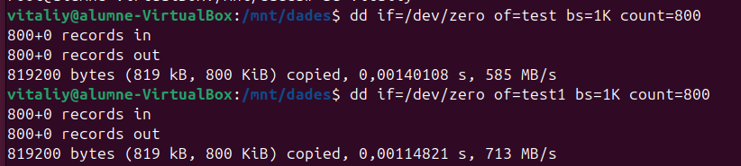
La comanda dd s'utilitza per copiar i convertir fitxers de manera controlada. En aquest cas, s'utilitza per crear fitxers de prova amb dades generades aleatòriament a partir de /dev/zero.
Comanda:
dd if=/dev/zero of=test bs=1K count=800
if=/dev/zero: Especifica el fitxer d'entrada, en aquest cas/dev/zero, que és un dispositiu especial que genera zeros contínuament.of=test: El fitxer de sortida, en aquest cas es crea un fitxer anomenattest.bs=1K: La mida del bloc de dades que es copiaran és de 1KB.count=800: Es copien 800 blocs de 1KB, resultant en un fitxer de 800KB.
L'execució de la comanda crea un fitxer test de 819200 bytes (800KB) i mostra la velocitat de còpia (en aquest cas, 585 MB/s en la primera execució i 713 MB/s en la segona).
Comprovació de la quota d'usuari
A la captura es mostra la comanda quota -u vitaliy per comprovar l'estat de la quota d'un usuari específic, en aquest cas, l'usuari vitaliy.
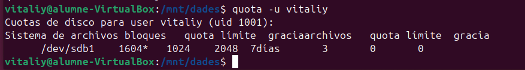
Comanda:
quota -u vitaliy
Aquesta comanda mostra la informació de les quotes de disc per a l'usuari vitaliy.
Explicació de la sortida:
/dev/sdb1: La partició on s'aplica la quota (en aquest cas,/dev/sdb1).1604*: L'espai actual utilitzat per l'usuari en blocs (1604 blocs). El símbol*indica que s'ha superat el límit tou.1024: Límit tou (soft limit) assignat, en blocs (1024 blocs o 1 MB).2048: Límit dur (hard limit) assignat, en blocs (2048 blocs o 2 MB).7 días: El període de gràcia de 7 dies per superar el límit tou.3: El nombre de fitxers utilitzats.
Superar el Límit de Quota
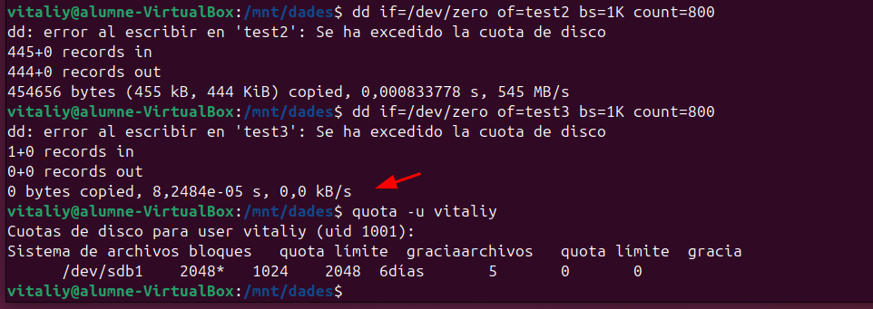
A la captura es mostra el que passa quan l'usuari vitaliy supera el límit de quota assignat:
-
Comanda
ddper crear fitxers:
L'usuari intenta crear fitxers amb la comandadd, però es genera un error perquè s'ha superat la quota de disc. Els missatges d'error són els següents: -
"dd: error al escribir en 'test2': Se ha excedido la cuota de disco"
- "dd: error al escribir en 'test3': Se ha excedido la cuota de disco"
Això indica que quan l'usuari intenta escriure més dades en els fitxers, el sistema bloqueja l'operació perquè s'ha arribat al límit de quota.
-
Comprovació de la quota amb
quota:
Quan l'usuari comprova l'estat de la seva quota amb la comandaquota -u vitaliy, es pot veure que ha superat el límit de quota assignat: -
/dev/sdb1 2048* 1024 2048 6 días2048*: L'usuari ha utilitzat 2048 blocs, que és el límit dur (hard limit).1024: Límit tou (soft limit) de 1 MB.2048: Límit dur (hard limit) de 2 MB.6 días: El període de gràcia de 6 dies, durant el qual l'usuari pot seguir utilitzant l'espai fins que redueixi l'ús d'espai.
-
Comportament al superar el límit:
Quan un usuari supera el límit dur (hard limit), el sistema impedeix que pugui escriure més dades al disc fins que redueixi l'ús d'espai per sota del límit dur. Això és el que es veu en la captura: el sistema bloqueja l'escriptura després d'excedir la quota.
Quan descarreguem una foto i intentem guardar-la a /mnt/dades, obtenim el següent resultat:
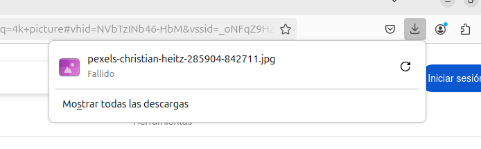
Aquest procés falla. A més, si intentem moure alguna foto o arxiu dins del directori /mnt/dades/, apareix aquest altre error indicant que hem superat la quota.
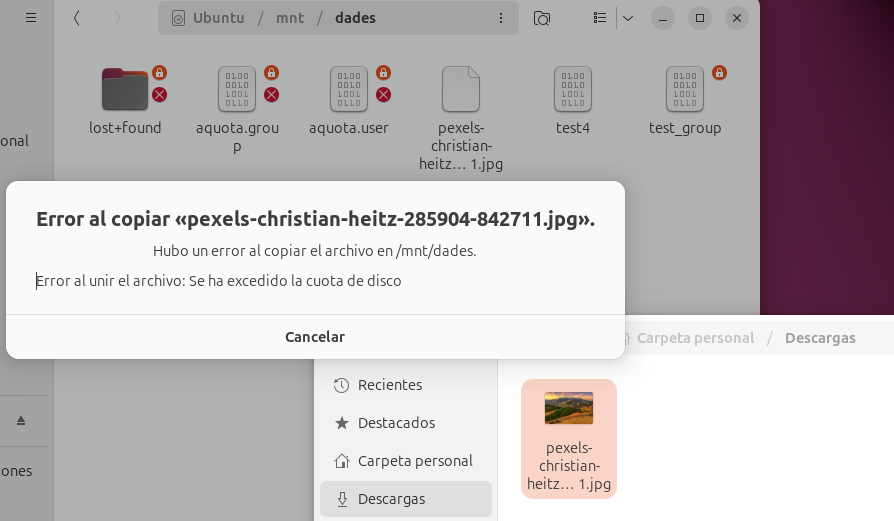
Configuració de warnquota amb notificacions per correu
Com a administradors, és important saber quan un usuari supera el límit de quota, ja que sovint els usuaris no són conscients d'aquests límits. Una manera senzilla de gestionar-ho és configurar l'enviament de correus electrònics per avisar els usuaris quan hagin superat la seva quota.
No entrarem en detall, però si estàs interessat en fer-ho, fes clic al botó de baix.
Configuració de `warnquota`
Aquesta guia detalla els passos seguits per configurar `warnquota` perquè enviï correus electrònics quan els usuaris superen les seves quotes, i s'executi automàticament cada dia.
- Instal·lació de les eines necessàries
- Instal·lar els paquets requerits:
quota: Per gestionar les quotes.mailutils: Per enviar correus electrònics.postfix: Per enviar correus electrònics.
- Comandes utilitzades:
apt update apt install quota mailutils postfix
- Instal·lar els paquets requerits:
- Configuració del servei de correu
- Es va instal·lar
mailutils, que configura un agent de correu (compostfix) per permetre l'enviament d'emails. - Durant la instal·lació de
postfix, es va seleccionar "Internet Site" com a configuració.
- Es va instal·lar
- Edició del fitxer de configuració de
warnquota- Es va editar el fitxer
/etc/warnquota.confper personalitzar els avisos de correu. - Contingut del fitxer ajustat:
MAIL_CMD = "/usr/sbin/sendmail -t" FROM = "Administració <admin@exemple.com>" SUBJECT = "Alerta: Has superat la quota!" CC_TO = "exemple@correu.com" SUPPORT = "exemple@correu.com" PHONE = "<opcional: número de telèfon>" CHARSET = UTF-8
- Es va editar el fitxer
- Prova manual de
warnquota- Es va executar
warnquotamanualment per verificar que els correus s'enviaven correctament:warnquota - Es va comprovar que els correus arribaven a l'adreça configurada (
exemple@correu.com).
- Es va executar
- Configuració de l'execució automàtica
- Es va configurar un cron job per executar
warnquotadiàriament. - Contingut del cron job afegit:
0 0 * * * /usr/sbin/warnquota - Aquest cron job es va afegir utilitzant:
sudo crontab -e
- Es va configurar un cron job per executar
Resultat final
warnquotaenvia correus electrònics als usuaris que superen el límit.- Es verifica l'execució automàtica diària al log del sistema:
grep warnquota /var/log/syslog
Aquestes configuracions asseguren que les quotes estan monitoritzades i que els usuaris són avisats de manera eficient.
Després de configurar-ho tot, comprovem si s'envia un correu electrònic forçant l'enviament manualment. Per fer-ho, executa la comanda warnquota i comprova si arriben els correus electrònics.
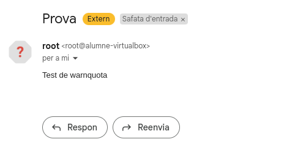
Si un usuari supera la quota, el sistema li enviarà automàticament un correu electrònic d'avís.
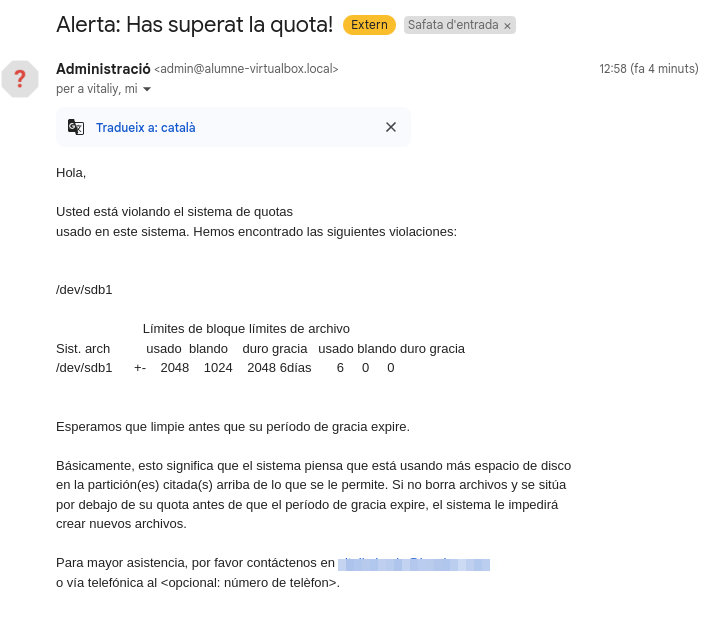
Aplicar Quotes a Grups
Una altra manera molt utilitzada per aplicar quotes és fer-ho a nivell de grups. En aquest cas, podem assignar una quota a un grup i afegir-hi els usuaris. Així, els usuaris dins d'aquest grup heretaran la quota del grup.
Afegim l'usuari Vitaliy al grup de classe i apliquem la quota.
setquota -g classe 5120 10240 0 0 /mnt/dades
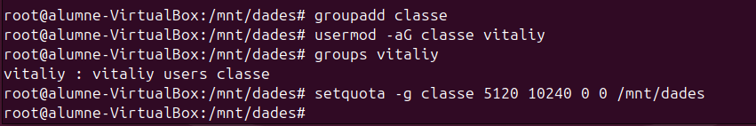
- Atenció! Aquesta configuració només funcionarà si els usuaris no tenen una quota assignada de manera individual. Si l'usuari té una quota pròpia, aquesta prevaldrà sobre la quota del grup, com podem observar a la següent captura.
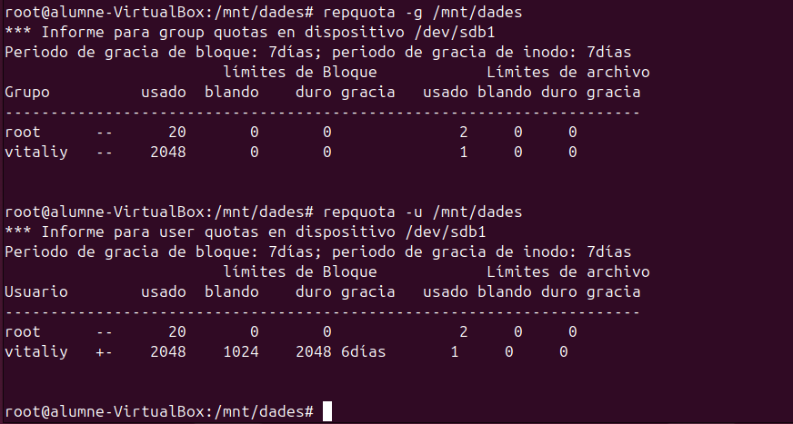
En aquesta captura, podem veure que l'usuari vitaliy està dins del grup classe, però quan utilitzem la comanda repquota -g /mnt/dades per verificar les quotes del grup, la quota aplicada a l'usuari vitaliy continua sent la seva quota individual, no la del grup.
Quan verifiquem la quota de l'usuari amb la comanda repquota -u /mnt/dades, veiem que la quota de vitaliy preval sobre la quota del grup, ja que la quota personal de l'usuari és visible en lloc de la quota del grup. Això confirma que, quan un usuari té una quota assignada directament, aquesta preval sobre les quotes assignades al grup.
Creació de l'usuari "Mireia" i el grup "Classe"
En aquest apartat, crearem un nou usuari anomenat Mireia. Posteriorment, afegirem Mireia al grup Classe i assignarem la carpeta /mnt/dades a aquest grup.
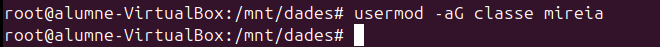
No és estrictament necessari que el grup propietari de /mnt/dades sigui "Classe", però és recomanable per assegurar que els membres del grup tinguin els permisos adequats per accedir i escriure a la carpeta.
Per assignar el grup propietari, utilitzarem la comanda següent:
chown :classe /mnt/dades
Creació de fitxers i intent de sobrepassar el límit de quota
Després de crear l'usuari i assignar-li el grup, crearem alguns fitxers per intentar sobrepassar el límit de quota del grup Classe.
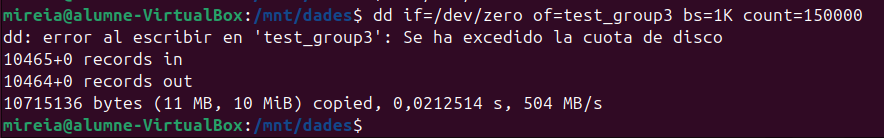
Comprovació de l'estat de la quota de grup
Finalment, comprovem l'estat de les quotes del grup Classe utilitzant la comanda:
repquota -g /mnt/dades
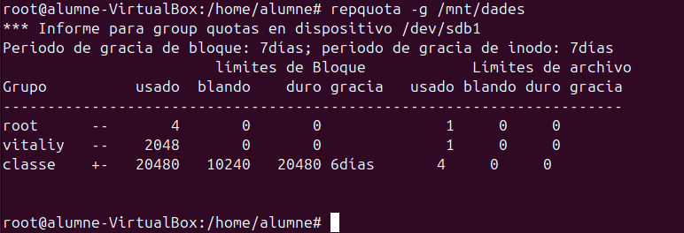
Explicació de la Captura
Aquesta captura mostra la sortida de la comanda repquota -g /mnt/dades per al grup classe en un sistema de fitxers montat a /mnt/dades.
- Grup:
classe - Usat: El grup ha utilitzat 20480 blocs. Això significa que el grup classe ha utilitzat 20MB d'espai a la partició.
- Blando (límit tou): El límit tou (soft limit) per al grup és de 10240 blocs (10MB). El grup ha superat aquest límit, però encara està dins del límit dur.
- Duro (límit dur): El límit dur (hard limit) per al grup és de 20480 blocs (20MB). El grup està exactament al límit dur, el que significa que ja ha arribat al límit màxim d'espai permès.
- Gracia: El període de gràcia és de 6 dies. Això vol dir que el grup té 6 dies per reduir el seu ús d'espai per sota del límit dur abans que es prenguin mesures.
Notes addicionals:
- El símbol
+a la columna Usat indica que el grup ha superat el límit tou però no ha arribat al límit dur. - Els altres usuaris (com
rootivitaliy) no tenen cap quota assignada o només s'han mostrant les dades generals sense que s'excedeixin els límits.
Email Automàtic de Superar Quota de Grup
Quan un grup o usuari supera el límit de quota, es pot configurar un sistema per enviar un correu electrònic automàticament. Aquest correu s'envia mitjançant un script personalitzat, ja que la funcionalitat de warnquota només funciona amb usuaris i no amb grups.
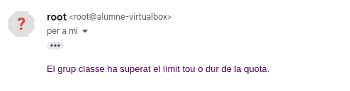
Script per Enviar Alerta per Correu quan un Grup Supera la Quota
Aquest script està dissenyat per verificar si un grup ha superat el límit de quota assignat i enviar un correu electrònic d'alerta automàticament.
Funcionament del Script
Aquest script realitza les següents accions:
- Obtenir l'informe de quotes: Utilitza la comanda
repquota -g /mnt/dadesper obtenir les quotes del grup. - Filtrar el grup específic: El resultat es filtra per buscar la línia relacionada amb el grup "classe".
- Comprovar si s'ha superat el límit: Si el límit de quota s'ha superat (indicat pel símbol
+), es genera un correu electrònic d'alerta. - Enviar l'alerta per correu: Si el grup ha superat el límit de quota, es crea i envia un correu electrònic amb l'alerta.
Contingut del script
#!/bin/bash
# Obtenim l'informe de quotes del grup
repquota -g /mnt/dades | grep "classe" > /tmp/group_quota_report.txt
# Verifiquem si s'ha superat el límit tou o dur
if grep -q "+" /tmp/group_quota_report.txt; then
echo "El grup classe ha superat el límit tou o dur de la quota." | mail -s "Alerta: Quota del grup classe superada" exemple@correu.com
fi
Aplicació del Script
Per aplicar aquest script, segueix aquests passos:
- Guardar el script: Guarda aquest script en un fitxer, per exemple
group_quota_check.sh. - Donar permisos d'execució: Utilitza la comanda següent per donar permisos d'execució al script:
chmod +x group_quota_check.sh - Afegir al Cron: Per executar aquest script automàticament cada dia, afegeix-lo a les tasques programades (cron jobs). Utilitza la comanda:
I afegeix la línia següent per executar el script cada dia a mitjanit:sudo crontab -e0 0 * * * /path/to/group_quota_check.sh
Resultat Esperat
Quan el grup "classe" superi el límit de quota, el sistema enviarà automàticament un correu electrònic amb el missatge:
El grup classe ha superat el límit tou o dur de la quota.Aquest sistema permet als administradors monitoritzar les quotes dels grups de manera eficient i notificar-los ràpidament en cas d'excedir els límits establerts.